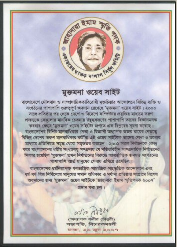

|
|
Jahanara Imam
Memorial Medal awarded to Mukto-Mona
Readers'
Responses
Published on
June 26, 2007

Readers'
Responses :
| |
|
|
|
| |
Subject |
Author |
Date |
| |
|
|
|
| 42833 |
Does Recognition Matter for a Good Cause?
... special and therefore, happy. For much similar
reasons, I felt elated when I heard Mukto-Mona has
been awarded Jahanara Imam Memorial Medal 2007. In
addition to the joy for getting recognized for the
first time officially through a national award ...
|
Jahed Ahmed
|
Jul 13, 2007
4:56 am |
| 42626 |
Re: Jahanara Imam Memorial Medal awarded to Mukto-Mona
Congratulation Mukto-Mona for receiving prestigious
Jahanara Imam Memorial Medal awarded. As a general
participant member of this family I feel proud of
you. Shamim Chowdhury - - In mukto-mona@yahoogroups.com
... |
Shamim Chowdhury
|
Jun 29, 2007
4:13 am |
| 42625 |
Re: Jahanara Imam Memorial Medal awarded to Mukto-Mona
Hearty Congratulations...! Younes SHEIKH |
Younes Sheikh
|
Jun 29, 2007
4:13 am |
| 42624 |
Re: Jahanara Imam Memorial Medal awarded to Mukto-Mona
WRT: http://groups.yahoo.com/group/mukto-mona/message/42588
I congratulate Mukto-Mona for Jahanara Imam Memorial
Medal in recognition of it's significant
contribution in humanism and work against religious
fundamentalism. This is a marvelous achievement ...
|
Prof. Asim K. Duttaroy
|
Jun 29, 2007
4:13 am |
| 42623 |
Re: Jahanara Imam Memorial Medal awarded to Mukto-Mona
Heartfelt congratultions! kEEP UP A GOOD WORK. Mark
= Mark Perakh is a retired professor from Cal. State
University with the Emeritus status. He is a
prominent skeptic who is passionately engaged in
debunking various kinds of crank science. Author of
... |
Prof. Mark Perakh
|
Jun 29, 2007
4:12 am |
| 42614 |
Re: Jahanara Imam Memorial Medal awarded to Mukto-Mona
This is a very deserving accolade for Mukto-Mona!
I'm very proud to be a part of this organization,
which takes a firm stand on various civil rights
violations allover the globe in addition to ...
|
Dr. A. H. Jaffor Ullah
|
Jun 28, 2007
2:35 pm |
| 42613 |
Crest and medal of Jahanara Imam award to MM
... know that Muktomona has been awarded Jahanara
Imam memorial award 2007. I am enclosing a few files
in pdf ... of the crest: https://gold.mukto-mona.com/award/Jahanara_award_crest.pdf
2. The medal on one side of which a picture of
Shahid Janani ... |
Prof. Ajoy Roy
|
Jun 28, 2007
2:31 pm |
| 42612 |
Re: Jahanara Imam Memorial Medal awarded to Mukto-Mona
WRT: http://groups.yahoo.com/group/mukto-mona/message/42600
Congratulations! A very well-deserved and belated
recognition for Mukto-Mona. I am so happy for you,
Taj Hashmi |
Dr. Taj Hashmi
|
|
| 42605 |
Re: [mukto-mona] Re: Jahanara Imam Memorial
Medal awarded to Mukto-Mona
All the credit goes to the moderators for
creating an environment in which secularists,
rational thinkers, and other progressive
thinkers get the opportunity to fight the
fundamentalists, fanatics ... |
Subimal
Chakrabarty
|
Jun 28, 2007
2:02 am |
| 42600 |
Jahanara Imam Medal to MM
... Jahanara_Award_ajoy.pdf Jahanara Imam
Memorilal Medal-2007 Goes to Muktomona It is
very good news. The Jahanara Memorial Medal-2007
has been awarded ... their limited resources.
The `Jahanara Imam Memorial Medal 2007' is
awarded to ‘Muktomona ... |
Prof. Ajoy Roy
|
Jun 27, 2007
4:00 pm |
| 42599 |
Re: Jahanara Imam Memorial Medal awarded to
Mukto-Mona
Dear Moderator Congratulation. Please convey my
congratulation and best wishes to every member
of the Mukto-Mana for their achievement. In this
regard I want to let you know that we are
fighting ... |
masudur rahman
|
Jun 27, 2007
3:49 pm |
| 42598 |
Re: Jahanara Imam Memorial Medal awarded to
Mukto-Mona
WRT: http://groups.yahoo.com/group/mukto-mona/message/42588
Many congratulations to Mukto-Mona friends and
scholars. You deserved it. Partha Banerjee |
Dr. Partha
Banerjee |
Jun 27, 2007
2:44 pm |
| 42597 |
Re: [mukto-mona] Jahanara Imam Memorial Medal
awarded to Mukto-Mona
Big Congratulations ! its fully deserved for all
of your tireless efforts. Nondini Hussain |
nondini hussain
|
Jun 27, 2007
2:15 pm |
| 42592 |
RE: [mukto-mona] Re: Jahanara Imam Memorial
Medal awarded to Mukto-Mona
WRT: http://groups.yahoo.com/group/mukto-mona/message/42588
I was present at the Nirmul Committee meeting in
Dhaka and reminded Shahriar and Ajoy-da that I
had been with Mukto-mona forum from its very
inception. I remember now with a great sense of
irony ... |
Farida Majid
|
Jun 27, 2007
9:22 am |
| 42590 |
Re: Jahanara Imam Memorial Medal awarded to
Mukto-Mona
Some major newspapers today have published the
news, here are two: Jugantor: http://jugantor.com/online/news.php?id=74362&sys=3
New Age: http://www.newagebd.com/nat.html etc.
Thanks to all members and well-wishers. Avijit.
|
Avijit Roy
|
Jun 27, 2007
5:37 am |
| 42589 |
Re: Jahanara Imam Memorial Medal awarded to
Mukto-Mona
Though I am not the member of moderation
team,advisory or any committe of MM but I feel
that I have been awarded. Carry on MM.
Nuruzzaman Manik - Sucker-punch spam with
award-winning protection. Try the free Yahoo!
Mail Beta. |
Nuruzzaman Manik
|
Jun 27, 2007
5:35 am |
| 42588 |
Jahanara Imam Memorial Medal awarded to Mukto-Mona
- Jahanara Imam Memorial Medal awarded to Mukto-Mona
Mukto-Mona Moderation Team Published ... today
has awarded Shahid Janani Jahanara Imam Smiriti
Padak (Jahanara Imam Memorial Medal) to Mukto-Mona
in recognition of its significant contribution
... |
Mukto-Mona
Moderators
|
Jun 27, 2007
1:15 am |
|
For more reactions and responses from readers, please
visit MM-yahoogroups.
|
|
|